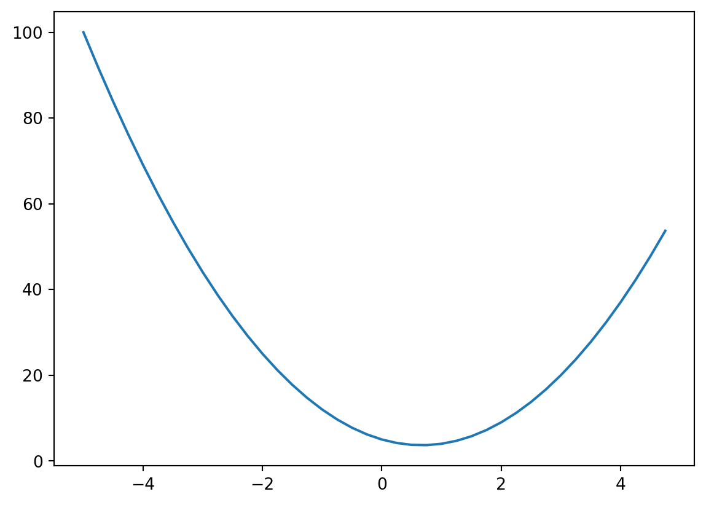
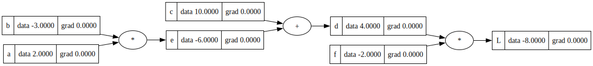
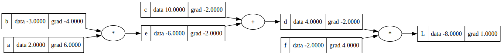
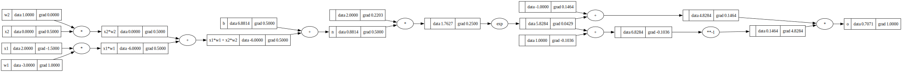

# Import required packages
import math
import numpy as np
import matplotlib.pyplot as plt
import randomThis is a walkthrough of Andrej Karpathy’s video “The spelled-out intro to neural networks and backpropagation: building micrograd”. This video is the first in his YouTube series, “Neural Networks: Zero to Hero.”
Neural networks are mathematical models used to represent nodes and the signals they send to one another through their links. Neural networks replicate the structure of the brain, where interconnected neurons send messages to each other through electric signals across the synpases that bridge them together. While individual nodes can perform only simple operations, many nodes connected together in a network can perform complex computational tasks.
The general structure of a neural network for machine learning includes three types of nodes, grouped into different “layers” within the neural network. The first set of nodes are the input nodes, corresponding to input (or training data). The second set of nodes refer to intermediate (hidden) nodes. The final type of node is the output node, corresponding to the result of processing the input data through the hidden nodes. This output layer typically comes in the form of a loss function, characterizing the difference between the output of the model and the expected output. The goal of optimizing a neural network is to minimize this output loss to best match the behavior of the input data.

Backpropagation is an algorithm for supervised learning of neural networks using gradient descent. This method will calculate the gradient of each intermediate node in the network with respect to the loss function, allowing us to iteratively tune their weights to minimize the overall loss.
In his video tutorial, Andrej shows how to construct a neural network from scratch and perform backpropagation on it to optimize the weights of the network. The code presented in this example is a direct copy of the code walked through in the video, streamlined a bit for interpretation. Writing this blog post helped me solidify my understanding of the material (and also helped me practice writing Python code in Quarto :) ). I would highly recommend following along with this tutorial and further videos for a hands-on, ground-up exploration of neural networks and language models! I aim to work through his other tutorials in the future as well.
With background out of the way, let’s get started~
```{r}
library(reticulate)
use_python('/opt/anaconda3/bin/python')
```Defining functions and manually calculating derivatives
We can start by thinking about a simple mathematical expression to give us some intuition behind the workings of individual neurons.
Let’s define a scalar value function f(x) that takes scalar input and returns scalar output. We can apply this function to a single value or a range of values.
# e.g. scalar value function that takes scalar input and returns scalar output
def f(x):
return 3*x**2 - 4*x + 5
# e.g. single value
f(3.0)
# e.g. range of values
xs = np.arange(-5, 5, 0.25)
ys = f(xs)
ysarray([100. , 91.6875, 83.75 , 76.1875, 69. , 62.1875,
55.75 , 49.6875, 44. , 38.6875, 33.75 , 29.1875,
25. , 21.1875, 17.75 , 14.6875, 12. , 9.6875,
7.75 , 6.1875, 5. , 4.1875, 3.75 , 3.6875,
4. , 4.6875, 5.75 , 7.1875, 9. , 11.1875,
13.75 , 16.6875, 20. , 23.6875, 27.75 , 32.1875,
37. , 42.1875, 47.75 , 53.6875])We can plot the output of our function to see the association between our input and output as well.
plt.plot(xs, ys)
Determining the derivative of f would let us identify inflection points in our data. Let’s calculate the derivative of f at 3 (i.e. f’(3)) numerically using the fundamental law of calculus:
\[ \lim_{h\to\infty} \frac{f(x+h)-f(x)}{h} \]
h = 0.0000000001
x = 3.0
(f(x+h) - f(x))/h14.000001158365194Note that if our h is too small for Python, we will end up with a floating point error. With some trial and error for different values of h, we can see f’(3) = 14
Now let’s make a function that is a little more complicated: \[ d(a, b, c) = a*b + c \]
a = 2.0
b = -3.0
c = 10.0
d1 = a*b + cAgain, we can calculate the derivative of d. This time, since we have three inputs, we have to pick a variable with respect to which we calculate the derivative. Let’s numerically calculate the derivative of d with respect to a.
h = 0.0000001
#derivative wrt a
a += h
d2 = a*b + c
print('d1', d1)
print('d2', d2)
print('slope', (d2-d1)/h)d1 4.0
d2 3.9999997
slope -2.9999999995311555We can do the same with respect to b as well.
#derivative wrt b
b += h
a = 2.0
d2 = a*b + c
print('d1', d1)
print('d2', d2)
print('slope', (d2-d1)/h)d1 4.0
d2 4.0000002
slope 1.9999999967268423We now have some intuition for how functions and derivatives work.
The ‘Value’ Class
Let’s define a class “Value” to store the individual values that come together to make a function / mathematical expression. Each ‘Value’ can be thought of as a node in a neural network.
class Value:
def __init__(self, data, _children=(), _op='', label=''):
self.data = data
self.grad = 0.0
self._backward = lambda: None #default: nothing
self._prev = set(_children)
self._op = _op
self.label = label
# Nicer looking way to see what the value actually is instead of an object
def __repr__(self):
return f"Value(data={self.data})"
def __add__(self, other):
other = other if isinstance(other, Value) else Value(other)
out = Value(self.data + other.data, (self, other), '+')
def _backward():
self.grad += out.grad
other.grad += out.grad
out._backward = _backward
return out
def __radd__(self, other): # other * self
return self + other
def __mul__(self, other):
other = other if isinstance(other, Value) else Value(other)
out = Value(self.data * other.data, (self, other), '*')
def _backward():
self.grad += other.data * out.grad
other.grad += self.data * out.grad
out._backward = _backward
return out
def __rmul__(self, other): # other * self
return self * other
def tanh(self):
x = self.data
t = (math.exp(2*x)-1)/(math.exp(2*x)+1)
out = Value(t, (self, ), 'tanh')
def _backward():
self.grad += (1 - t**2) * out.grad
out._backward = _backward
return out
def exp(self):
x = self.data
out = Value(math.exp(x), (self, ), 'exp')
def _backward():
self.grad += out.data * out.grad
out._backward = _backward
return out
def __pow__(self, other):
assert isinstance(other, (int, float)), "only supporting int/float powers for now"
out = Value(self.data**other, (self,), f'**{other}')
def _backward():
self.grad += other * (self.data**(other-1)) * out.grad
out._backward = _backward
return out
def __truediv__(self, other): #self / other
return self * other**-1
def __neg__(self): # -self
return self * -1
def __sub__(self, other): # self - other
return self + (-other)
def backward(self):
topo = []
visited = set()
def build_topo(v):
if v not in visited:
visited.add(v)
for child in v._prev:
build_topo(child)
topo.append(v)
build_topo(self)
# call _backward() in the right topological order
self.grad = 1.0
for node in reversed(topo):
node._backward()We can see how to perform mathematical operations using our Value class:
a = Value(2.0)
b = Value(4.0)
a-bValue(data=-2.0)Now let’s define an example function L that makes use of our Value class:
\[ L(a, b, c, f) = (a*b + c)*f \]
a = Value(2.0, label='a')
b = Value(-3.0, label='b')
c = Value(10.0, label='c')
e = a*b; e.label = 'e'
d = e + c; d.label = 'd'
f = Value(-2.0, label = 'f')
L = d * f; L.label = 'L'
LValue(data=-8.0)Based on the code in our Value class, we are able to see for each node which nodes came before it and what the operation was to generate the current node.
d._prev
d._op'+'We can also define a function ‘draw_dot’ to be able to visualize the components of our function. Here, we build out a graph using the GraphViz API. We then iterate over all nodes and create corresponding nodes and edges (including values and operations as different node types in our network).
from graphviz import Digraph
def trace(root):
# builds a set of all nodes and edges in a graph
nodes, edges = set(), set()
def build(v):
if v not in nodes:
nodes.add(v)
for child in v._prev:
edges.add((child, v))
build(child)
build(root)
return nodes, edges
def draw_dot(root):
dot = Digraph(format='svg', graph_attr={'rankdir': 'LR'}) #LR = left to right
nodes, edges = trace(root)
for n in nodes:
uid = str(id(n))
# for any value in the graph, create a rectangular ('record') node for it
dot.node(name = uid, label = "{ %s | data %.4f | grad %.4f }" % (n.label, n.data, n.grad), shape = 'record')
if n._op:
# if this value is a result of some operation, create an op node for it
dot.node(name = uid + n._op, label = n._op)
# and connect this node to it
dot.edge(uid + n._op, uid)
for n1, n2 in edges:
# connect n1 to the op node of n2
dot.edge(str(id(n1)), str(id(n2)) + n2._op)
return dotdraw_dot(L)
Manual backpropagation example
With our basic function L now represented as a network of values and operations, let’s perform manual backpropagation.
We’ll start from L and work backwards, taking the derivative with respect to L at each intermediate value. This exercise is equivalent to determining the derivative of an output L with respect to the internal weights of a neural network.
# Let's calculate gradient of L wrt a manually using the fundamental theorem of calculus
# (f(x+h) - f(x))/h
def lol():
h = 0.001
a = Value(2.0, label='a')
b = Value(-3.0, label='b')
c = Value(10.0, label='c')
e = a*b; e.label = 'e'
d = e + c; d.label = 'd'
f = Value(-2.0, label = 'f')
L = d * f; L.label = 'L'
L1 = L.data
a = Value(2.0 + h, label='a')
b = Value(-3.0, label='b')
c = Value(10.0, label='c')
e = a*b; e.label = 'e'
d = e + c; d.label = 'd'
f = Value(-2.0, label = 'f')
L = d * f; L.label = 'L'
L2 = L.data
print((L2-L1)/h)#dL/da
lol()6.000000000000227We can go through this entire network structure and set the gradients for each node with respect to L.
#We know dL/dL = 1
L.grad = 1#L = d*f
#So dL/df = d
#and dL/dd = f
f.grad = 4.0 # this is just the value of d
d.grad = -2.0 # this is just the value of f# what is dL/dc?
# We can use dL/dd and dd/dc and apply the chain rule
# dL / dc = (dL/dd) * (dd/dc) = -2*1 = -2
# dL/de is the same, -2
c.grad = -2.0 # this is just the value of d
e.grad = -2.0 # this is just the value of f# dL/da = dL/de * de/da = -2*b = -2*-3 = 6
# dL/db = dL/de * de/db = -2*a = -2*2 = -4
a.grad = 6.0 # this is just the value of d
b.grad = -4.0 # this is just the value of fdraw_dot(L)
Here is our key takeaway from this example:
Backpropagation is just the recursive application of the chain rule backwards through the computational graph of your neural network.
Introducing an activation function.
In our previous example, we had an output L that could take on any value. Now let’s make use of the hyperbolic tangent (\(tanh\)) activation function to limit our output to a range of -1 to 1.
\(Tanh\) looks as follows:
#Squashing/activation function - tan(h)
plt.plot(np.arange(-5,5,0.2), np.tanh(np.arange(-5,5,0.2)));
plt.grid();Let’s define a new function \(o = tanh(x1*w1 + x2*w2 + b)\)
# inputs x1, x2
x1 = Value(2.0, label = 'x1')
x2 = Value(0.0, label = 'x2')
# weights w1, w2
w1 = Value(-3.0, label = 'w1')
w2 = Value(1.0, label = 'w2')
# bias of the neuron (crazy bias makes clean output in this example)
b = Value (6.881373587019542, label = 'b')
#x1*w1 + x2*w2 + b
x1w1 = x1*w1; x1w1.label = 'x1*w1'
x2w2 = x2*w2; x2w2.label = 'x2*w2'
x1w1x2w2 = x1w1 + x2w2;
x1w1x2w2.label = 'x1*w1 + x2*w2'
# n is our cell body activation without the activation function
n = x1w1x2w2 + b;
n.label = 'n'
# Apply activation function (defined in Value class earlier)
o = n.tanh(); o.label = 'o'Here is the network that represents the function we just defined:
draw_dot(o)We care most about the derivative of o with respect to the weights w1 and w2. In a normal neural network, we would have many more input and intermediate nodes (not just the two as in this example). We will calculate the gradients for this network by hand.
o.grad = 1.0
# o = tanh(n)
# do/dn = 1-tanh^2(n) = 1 - o^2
n.grad = 1-o.data**2
# do/db = do/dn * dn/db = (1-o^2)*1 = 1-o^2
# d(x1w1x2w2)/db = do/dn * dn/d(x1w1x2w2) = (1-o^2)*1 = 1-o^2
x1w1x2w2.grad = 1-o.data**2
b.grad = 1-o.data**2
# same logic of back-propagation wrt '+'
x1w1.grad = 1-o.data**2
x2w2.grad = 1-o.data**2
#do/dx2 = w2 * do/d(x2w2)
x2.grad = w2.data * x2w2.grad
#do/dw2 = x2 * do/d/(x2w2)
w2.grad = x2.data * x2w2.grad
# same logic as for x2/w2
x1.grad = w1.data * x1w1.grad
w1.grad = x1.data * x1w1.graddraw_dot(o)So, because w1’s gradient is positive, if we want this neuron’s output to increase, then we should increase w1. w2 doesn’t affect the output of this function because its gradient is 0.
Automating backpropagation
Let’s stop doing this back-propagation manually! Take a look at the logic for _backward and backwardin the Value class to see how we handle this (we apply a topological sort to our data in the backward function). We also ensure that we never call _backward on a node before we’ve called it on its children. Lastly, we make sure that we accumulate gradients in the backward function.
o.grad = 1.0
o._backward()
n._backward()
b._backward()
x1w1x2w2._backward()
x2w2._backward()
x1w1._backward()draw_dot(o)o.backward()
draw_dot(o)a = Value(3.0, label = 'a')
b = a+a; b.label = 'b'
b.backward()
draw_dot(b)Everything works! Yay!
Breaking up tanh into its individual components
Instead of using a \(tanh\) function in our Value class, we can break it up into exponent and division functions to see an example of a more complicated network.
# inputs x1, x2
x1 = Value(2.0, label = 'x1')
x2 = Value(0.0, label = 'x2')
# weights w1, w2
w1 = Value(-3.0, label = 'w1')
w2 = Value(1.0, label = 'w2')
# bias of the neuron
b = Value (6.881373587019542, label = 'b')
#x1*w1 + x2*w2 + b
x1w1 = x1*w1; x1w1.label = 'x1*w1'
x2w2 = x2*w2; x2w2.label = 'x2*w2'
x1w1x2w2 = x1w1 + x2w2;
x1w1x2w2.label = 'x1*w1 + x2*w2'
# n is our cell body activation without the activation function
n = x1w1x2w2 + b;
n.label = 'n'
# Apply activation function (defined in Value class earlier)
e = (2*n).exp()
o = (e-1)/(e+1)
o.label = 'o'
o.backward()draw_dot(o)
As we can see, even after breaking our tanh function into its individual components, our forward and backward passes are still correct! Note that the level at which you perform your individual operations is entirely up to you (e.g. tanh vs. its individual components). All that matters is that you have input and output and that you can do forward/backward passing of your operations.
Backpropagation with PyTorch
Now that we’ve developed backpropagation manually, let’s see how it can be performed in PyTorch. With PyTorch, everything is based around tensors rather than scalars.
import torch
# Cast to double to get 64bit precision
x1 = torch.Tensor([2.0]).double()
# by default, pytorch will say leaf nodes don't have gradients to improve efficiency
x1.requires_grad = True
x2 = torch.Tensor([0.0]).double()
x2.requires_grad = True
w1 = torch.Tensor([-3.0]).double()
w1.requires_grad = True
w2 = torch.Tensor([1.0]).double()
w2.requires_grad = True
b = torch.Tensor([6.8813735870195432]).double()
b.requires_grad = True
n = x1*w1 + x2*w2 + b
o = torch.tanh(n)
# PyTorch tensors have data and grad elements
print(o.data.item())
# PyTorch has a backward function too
o.backward()
print('---')
print('x2', x2.grad.item())
print('w2', w2.grad.item())
print('x1', x1.grad.item())
print('w1', w1.grad.item())0.7071066904050358
---
x2 0.5000001283844369
w2 0.0
x1 -1.5000003851533106
w1 1.0000002567688737PyTorch makes all of our calculations much more efficient. We can do all of these operations in parallel with very large tensors and not just scalar values.
A simple neural network
We’ve had enough fun with “neural network adjacent” mathematical expressions and their corresponding computational topologies.
Let’s implement a simple neural network. We will base this off of a multilayer perceptron (MLP). We can define a Neuron class, Layer class, and MLP class for our network.
A typical neural network neuron looks like the following:

class Neuron:
def __init__(self, nin):
self.w = [Value(random.uniform(-1,1)) for _ in range(nin)]
self.b = Value(random.uniform(-1,1))
# Python goes to __call__ when you use the class as a function
def __call__(self, x):
# w.x + b
# start with self.b, add the dot product of w and x
act = sum((wi*xi for wi,xi in zip(self.w, x)), self.b)
out = act.tanh()
return out
def parameters(self):
return self.w + [self.b]class Layer:
# nout is the size of the output of the layer
def __init__(self, nin, nout):
self.neurons = [Neuron(nin) for _ in range(nout)]
def __call__(self, x):
outs = [n(x) for n in self.neurons]
return outs[0] if len(outs) == 1 else outs
def parameters(self):
params = []
for neuron in self.neurons:
ps = neuron.parameters()
params.extend(ps)
return params
# Same as:
# return [p for neuron in self.neurons for p in neuron.parameters()]class MLP:
# nouts is the list of layer sizes we want
def __init__(self, nin, nouts):
sz = [nin] + nouts
self.layers = [Layer(sz[i], sz[i+1]) for i in range(len(nouts))]
def __call__(self, x):
for layer in self.layers:
x = layer(x)
return x
def parameters(self):
return [p for layer in self.layers for p in layer.parameters()]Based upon our defined classes, let’s initialize our MLP.
x = [2.0, 3.0, -1.0]
n = MLP(3, [4, 4, 1])
n(x)Value(data=0.4944649312890593)draw_dot(n(x))
Wow, our function is much crazier than our initial examples! Obviously we’re never going to manually backpropagate such an example… let’s have PyTorch do it for us.
We start by defining some sample input data and our desired targets. We then use our baseline MLP to calculate model outputs from the input data.
# Example data
xs = [
[2.0, 3.0, -1.0],
[3.0, -1.0, 0.5],
[0.5, 1.0, 1.0],
[1.0, 1.0, -1.0]
]
ys = [1.0, -1.0, -1.0, 1.0] #desired targets
# Apply our MLP to predict y from x
ypred = [n(x) for x in xs]
ypred[Value(data=0.4944649312890593),
Value(data=0.40977958134154474),
Value(data=-0.4050151100259451),
Value(data=0.3923524132012742)]We can compare our model outputs to the expected outputs using a loss function such as mean squared error (MSE).
# loss will measure how good our neural net is
# let's do mean squared error
loss = sum((yout - ygt)**2 for ygt, yout in zip(ys, ypred))
lossValue(data=2.96628678270387)Now let’s backpropagate (automatically this time)!
loss.backward()If the gradient of a weight is positive, then decreasing the weight will decrease the overall loss. Similarly, if the gradient is negative, then increasing the weight will decrease the loss.
# If this gradient is positive, then decreasing this weight will decrease our loss
# If this is negative, then increasing this weight will decrease our loss
n.layers[0].neurons[0].w[0].grad-1.2640701291368466n.layers[0].neurons[0].w[0].data-0.9567063145203327For every parameter in our neural network, let’s change the weights slightly to reduce the overall loss. We increase the weight for negative gradients and decrease the weight for positive gradients.
# for every parameter in our neural net, let's change the weights slightly to reduce the loss
# increase for negative grad, decrease for positive grad
for p in n.parameters():
p.data += -0.01*p.gradOur overall loss should have gone down a bit now. Let’s recalculate it.
ypred = [n(x) for x in xs]
loss = sum((yout - ygt)**2 for ygt, yout in zip(ys, ypred))
lossValue(data=2.6726876872891854)# Propagate
loss.backward()ypred[Value(data=0.4993403271200778),
Value(data=0.3198034181833698),
Value(data=-0.45493607758790167),
Value(data=0.38108818311718595)]Nice, we’re able to train our data better now. Let’s formalize this process of updating gradients in a loop. This is the same thing as “stochastic gradient descent”.
# Reset the neural net
x = [2.0, 3.0, -1.0]
n = MLP(3, [4, 4, 1])
n(x)Value(data=0.34934876482956906)# Initialize input data and desired targets
xs = [
[2.0, 3.0, -1.0],
[3.0, -1.0, 0.5],
[0.5, 1.0, 1.0],
[1.0, 1.0, -1.0]
]
ys = [1.0, -1.0, -1.0, 1.0]# 20 iterations
for k in range(20):
# forward pass
ypred = [n(x) for x in xs]
loss = sum((yout - ygt)**2 for ygt, yout in zip(ys, ypred))
# backward pass
for p in n.parameters():
p.grad = 0.0
loss.backward()
# update
# "stochastic gradient descent"
for p in n.parameters():
p.data += -0.05 * p.grad
print(k, loss.data)0 8.493929671336291
1 6.992068662805386
2 5.769077247651545
3 4.4735019295768295
4 3.989548688723282
5 3.7147609186944743
6 3.405667943207894
7 2.8620742530053116
8 1.7745806845463523
9 0.7698861574003086
10 0.4457449169022083
11 0.30780024751796564
12 0.23273878356815986
13 0.18590290331973824
14 0.15408948967655905
15 0.13116783996889828
16 0.11392081179247492
17 0.10050481438071963
18 0.08979065153648244
19 0.08104964070586138ypred[Value(data=0.9034116586940597),
Value(data=-0.9567970932148172),
Value(data=-0.8069423147548922),
Value(data=0.8194935678632469)]Ta-da! We now understand the intuition behind developing simple neural networks and performing backpropagation to improve their predictive performance!
Takeaways and summary
Neural nets are simple mathematical expressions that take input data and weights. Working with neural networks involves a forward pass of input data followed by the application of a loss function.
The goal of a neural network for machine learning is to minimize the output loss to get the model to better predict desired targets. Backpropagation can be applied from the loss function to determine the gradients of the intermediate weights of the network. We can then tune the weights of these nodes against the gradient (i.e. gradient descent) to improve the predictive performance of the model.
Simulating a blob of neural tissue in this manner can handle all sorts of interesting problems. Generative Pre-trained Transformers (GPTs) uses massive amounts of text from the internet and then predict the next words in a sentence based on context. These are really just fancy neural networks with hundreds of billions of parameters. Different models may use different loss functions and different methods for gradient descent, but the underlying concepts are all consistent.
This concludes my walkthrough of Andrej’s first neural networks video tutorial. Until next time, [VS]Coders!